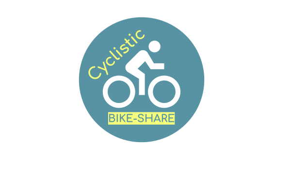

In this project, we used the R language to analyze a combined 10 datasets totaling over 3 million rows to come up with business solutions
by doing simple visualizations, cleaning data, and lastly sharing the information found on how the data can help this said fictional company,
"Cyclistic" improve sales and convert many monthly members to yearly subscribers to make profit.


In this project, I used python to analyze the BellaBeat data to see how active the users are that use the BellaBeat app and products. I had to clean,
visualize, and share the information with the supposed "stakeholders".
In this mini project, I used R to determine the Rise and Fall of programming languages that are searched up in stack overflow.
This project required filtering and cleaning data in order to get the desired outcome.

This project, I looked into the variables that affected the gross revenue from movies and other data correlations using Python.

In this project, I used the SQL langauge to clean data such as mismatching data, splitting columns, removal of duplicate values, and creating new calculated columns to make analysis easier.